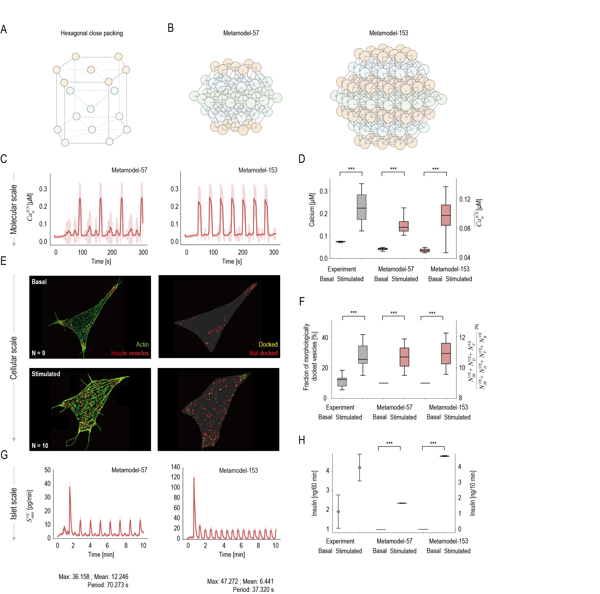
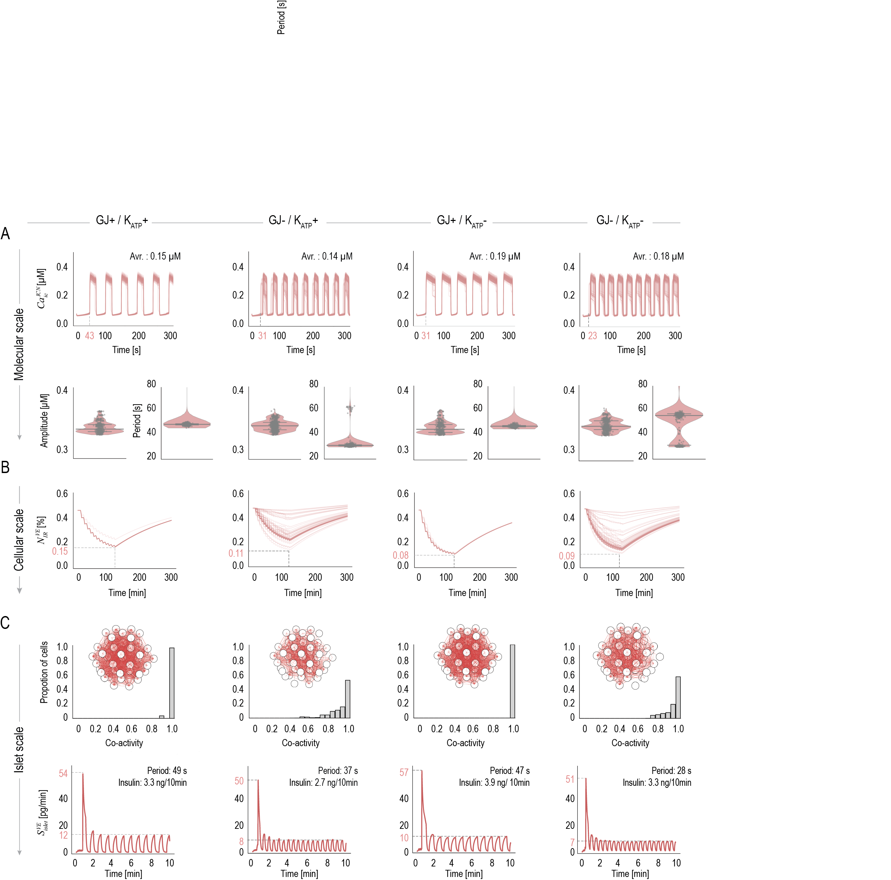
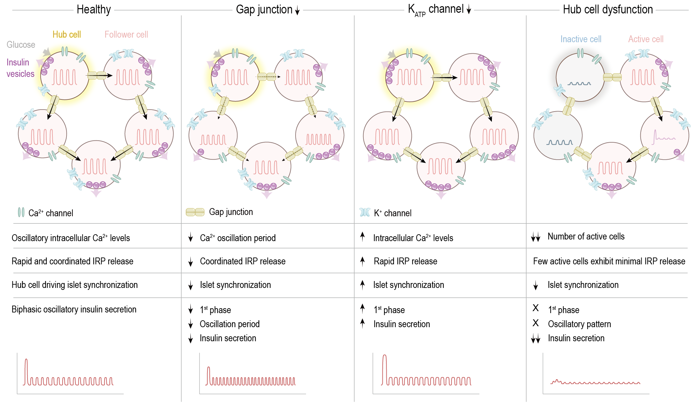

We introduce Graph-based Metamodeling (GraphMM), a novel framework that integrates models across multiple representations and spatiotemporal scales, by (i) converting input models into universal surrogate representations using probabilistic graphical models; (ii) coupling surrogates across time scales using a standardized strategy; and (iii) approximate metamodel inference. Validation through synthetic benchmarks and real-world applications shows improved accuracy over existing methods. GraphMM enables quantitative predictions of β-cell dynamics and function across molecular, cellular, and multicellular scales. GraphMM provides a versatile framework for integrating models to uncover the dynamics of complex systems.
Overview Video
Figure: Brief introduction of GraphMM framework.
Abstract
Understanding how molecular and cellular dynamics regulate tissue function remains a central challenge in biology. Here, we develop a graph-based metamodeling framework for modeling of complex biological systems and apply it to construct a comprehensive metamodel of the β-cell. The metamodel integrates 115 input models that describe various aspects of β-cell physiology across molecular, cellular, and multicellular spatial scales, spanning ten orders of magnitude in timescales. Validated against a broad range of experimental data, including fluorescence imaging, the metamodel uncovers how the interplay between gap junction coupling and K+ channel–mediated signaling regulates islet function. Moreover, the metamodel identifies and characterizes two types of hub cells, each deterministically driving islet activity and synchronization via unique ion channel properties. Perturbing channel conductance and hub cell activity recapitulates distinct diabetic phenotypes, highlighting them as mechanistic drivers of diabetes and potential therapeutic targets. Our metamodeling framework is broadly applicable to modeling other complex biological systems.

Multiscale β-cell metamodel under basal and glucose-stimulated conditions

Effects of varying gap junction coupling and KATP-mediated signaling across scales.

Schematic representation of the role of intercellular communication and hub cells in β-cell dynamics, activity and islet function.
About page content...
Detail page content...